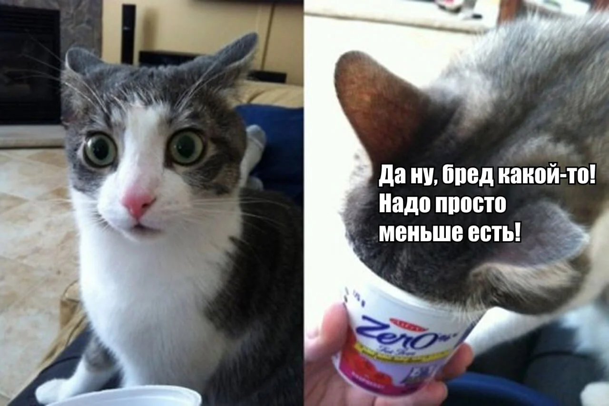
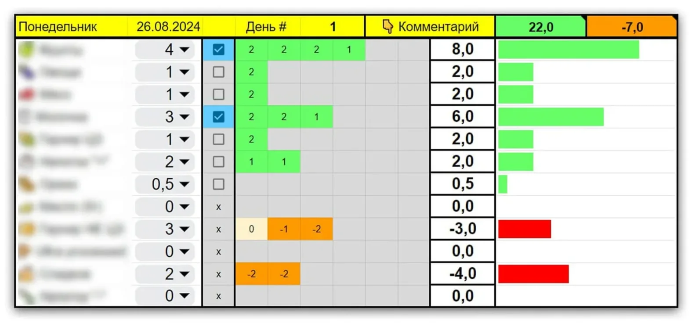
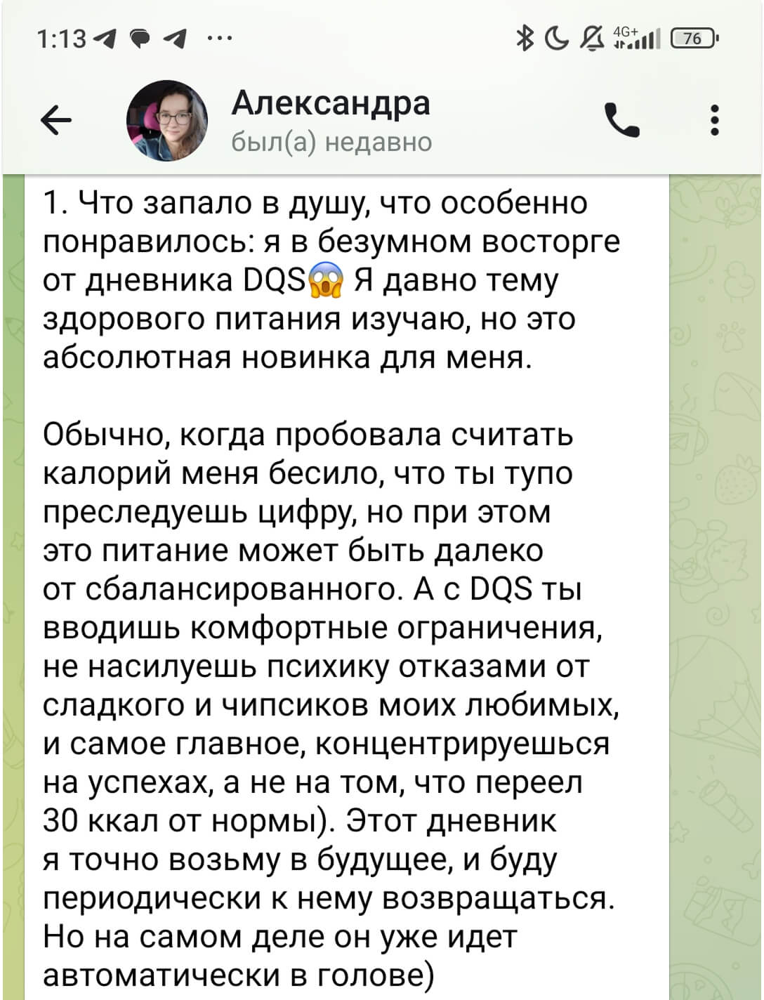

А вы знаете, почему одни должны вечно ограничивать себя, чтобы хотя бы не толстеть дальше, а другие едят всё подряд — чипсики, пироженки, пиво и... ходят худые!
Предлагаю задуматься: А что если вы не можете держать дефицит калорий не потому, что вы тряпка, а потому что ваше питание недостаточно сбалансированное и качественное, чтобы позволить вам такую роскошь, как похудение?

Закрывать базовые потребности!
В нашем питании есть два вида потребностей, которые мы закрываем с помощью еды:
- Базовые потребности организма во всяких полезных веществах и энергии, чтоб были силы и не было голода.
- Потребность в удовольствии, вкусах и эмоциональной разрядке. Это не прихоть и не слабость, а нормальное желание получать наслаждение от еды и от жизни.
Если не закрыть базовые потребности — вам будет голодно, холодно и плохие анализы. А если не закрыть психологические потребности — то так может и кукуха поехать, нам такого не надо.
Чем качественней и сбалансированней питание, тем меньше калорий надо, чтобы удовлетворить базовые потребности организма. А значит больше калорий можно будет потратить на разные удовольствия.
Допустим, ваш энергетический баланс (сколько вам надо есть для поддержания) = 2000 ккал.
Если вы питаетесь НЕсбалансированно
Тогда каждый день вам нужны все эти 2000 ккал просто чтобы более-менее функционировать и не помирать с голоду. Из вашей привычной еды организм еле-еле закрывает свои базовые потребности «впритык».
😞 Добавили сверху десерт — и это уже выход за пределы нормы, потому что базовую часть (2000 ккал кроме тортика) организм всё равно попросит сверху, не сегодня, так завтра.
😞 Будете пытаться похудеть и питаться ниже 2000 ккал — сразу начнется слабость, тяга к сладкому, раздражительность и навязчивые мысли о еде, потому что на условные 1600 ккал из привычной еды вы не можете дать организму всё необходимое.
В таком режиме даже поддержание веса — это постоянная борьба.
Если вы питаетесь сбалансированно
Теперь представим ту же норму — 2000 ккал, но при сбалансированном питании. Тогда базовые потребности закрываются, условно, за 1600 ккал, а оставшиеся 400 ккал — это пространство для гибкости:
😎 В один день на эти калории будет лишний десерт. В другой день можно распустить руки в гостях за праздничным столом и не париться.
😎 А если захотите похудеть, то лишний голод, слабость и раздражительность вам мешать не будут. Потому что те 1600 ккал для вашего похудения — полностью закрывают все базовые потребности.
В таком режиме даже похудение — лёгкая прогулка!
Поэтому разница в лёгкости похудения заключается не в ограничении тортиков, чипсиков, а в том, как выглядит всё остальное питание, кроме тортиков и чипсов.
Как сделать питание сбалансированным?
Здоровое питание — это не список «полезных» продуктов. Это правильные ПРОПОРЦИИ между всеми продуктовыми категориями.
Всё, что попадает к нам в рот, можно разделить на продуктовые категории. Мясо, фрукты, сладости и так далее. У каждой категории и у каждого продукта есть своё место и своя задача в питании — даже у сладкого и «вредного» или фаст-фуда.

Например:
- Кусок говядины — добор белка, сытости и витамина B12
- Здоровые гарниры — энергообеспечение организма
- Болгарский перец — получение клетчатки
- Карамельный чизкейк — получение удовольствия
Да, вы правильно поняли, у привычных вредностей тоже есть важные задачи в питании. Поэтому нужно заниматься не ИСКЛЮЧЕНИЕМ «вредных» продуктов, а ВОЗВРАЩЕНИЕМ каждой категории её нормального места в питании.
Тогда вы сможете за минимум калорий закрыть все базовые потребности, а на сдачу можно либо без вреда закинуться лишним тортиком, либо устроить себе дефицит калорий, без голода и стресса.
Три продуктовые категории
Которые вы точно НЕДОЕДАЕТЕ! Даже если вам кажется, что доедаете.
Если меня поймают на улице хулиганы, окружат, прижмут к стене, упрутся кое-чем холодным и острым в районе горла и спросят: «Что нам съесть, чтобы похудеть?» Я не раздумывая отвечу:
Бобовые, овощи, мясо!
А если меня сразу же после этого не прирежут, то скромно добавлю, что после того, как я разобрал уже 600+ дневников питания, могу уверенно советовать увеличить присутствие именно этих трёх категорий любому встречному поперечному почти без разбора. А теперь чуть подробнее...
- Бобовые — тут стоит начать с того, что прикиньте, они существуют. На этом можно в принципе и закончить... большинству этого тайного знания уже будет достаточно. Просто вспомните о них!
- Овощи — да, я знаю, что вы и так стараетесь, но можно стараться лучше. Даже если в граммах овощей достаточно, то вот по разнообразию среди огурчиков и помидорчиков редко что-то удаётся разглядеть. Это не есть хорошо.
- Мясо — но не просто мясо, а вкусно приготовленные цельные куски мяса. Кстати, курица и рыба — это тоже мясо в моей системе ценностей. Из сотен моих клиентов я только двум сказал, что кажись, вы едите много мяса. Оба — мужчины. Но это редкость.
Чтобы правильно настроить баланс продуктовых категорий индивидуально для каждого, я использую специальную систему оценки качества питания, которая даёт ответ, какой продуктовой категории вам не хватает в каждый конкретный момент времени, причём всё это без калорий и без взвешиваний!
Это моя авторская разработка, которой я очень горжусь, а недавно я запустил приложение на её основе, чтобы вам было ещё удобнее знакомиться со своим питанием!

Подробно эту систему я даю в моём трёхнедельном Мастер-классе по изменению питания и пищевых привычек. Но главная её фишка не в том, сколько баллов вы получите за день.
Заполняя дневник, вы очень быстро учитесь не просто видеть готовые блюда и продукты и вешать на них ярлыки «вредно» или «полезно», а понимать, из каких продуктовых категорий собрана каждая тарелка — и вообще весь ваш холодильник.
Со временем одного взгляда будет достаточно, чтобы понять, насколько сегодняшний день похож на что-то сбалансированное и чего именно не хватает. А если не хватает — у вас уже есть не один «правильный» рецепт на все случаи жизни, а сотня простых и доступных способов сделать питание более сбалансированным абсолютно в любой ситуации, опять-таки благодаря моей таблице.
Но всё это — уже внутри Мастер-класса. А пока к заданию на сегодня!
Разнообразие
Есть одна важная часть питания, с которой у россиян в среднем всё совсем грустно. Даже минимальную норму набирают всего 12% людей. Для сравнения: в Белгородской области справляются 26%, а в Петербурге — только 9%.
Но количество — это ещё цветочки. Есть другой, более важный показатель, и, по моим подсчётам, его выполняет меньше 1% россиян — это разнообразие!
Что это за показатель и как проверить себя — читайте в посте «Всего 12% россиян делают ЭТО!». Там же я дам увлекательное задание на ближайшие дни: если выполните — войдёте в ТОП 1% россиян. Ну а если не выполните, то одной лишь попыткой нанесёте непоправимую пользу себе и своим пищевым привычкам!